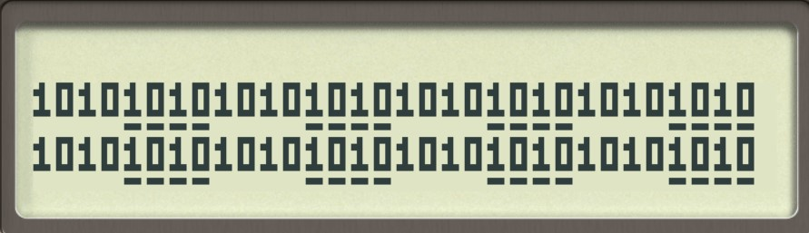

free42/hp42s/DM42 Base-N Tools
| Author: | Mitch Richling |
| Updated: | 2021-04-01 19:51:21 |
Copyright 2021 Mitch Richling. All rights reserved.
Table of Contents
1 Metadata
This home for this HTML file is: https://richmit.github.io/hp42/base.html
Files related to this document may be found on github: https://github.com/richmit/hp42
srcdirectory: Contains the org-mode file that generated this HTML documentdocsdirectory: Contains this html documentbindirectory: Contains raw program files
2 Introduction

When I'm doing embedded programming I use my HP-16c & DM16 calculators all the time. I love the DM42, but it has pretty limited base-n capabilities compared to the 16c. The programs here significantly augment the 42's capabilities on this front, but they don't quite make the 42 as nice as the 16c. In particular you still have to use the BASE menu to enter some hexadecimal digits.
The 42 can deal with 64-bit binary numbers, but it can't display them – when you try it displays them in hexadecimal. The BVIEW 4
program remedies this issue and works just fine on a standard HP-42s or free42 screen. BVIEW uses the TNPR 3 function to draw the
digits – this uses a tiny, 5 pixel tall font. The character set is sufficient to display all kinds of numbers, but the only thing I have implemented so far
is the binary number printer.
This code is structured as several independent functions (See: the code) that are then tied together into a menu (See: Menu Contents) for easy access – See the code here. This allows you to use these functions in your own programs. The individual functions are documented in the code.
3 Tiny Number Printing
3.1 Code to print digits
@@@@@@@@@@@@@@@@@@@@@@@@@@@@@@@@@@@@@@@@@@@@@@@@@@@@@@@@@@@@@@@@@@@@@@@@@@@@@@@@ (TNPR) @@@@ DSC: Tiny Number PRint @@@@ IN: Z: Y coordinate for upper left point of character -- Top of screen is 1 @@@@ Y: X coordinate for upper left point of character -- Left of screen is 1 @@@@ X: Character number -- integer in [0, 28] @@@@ OUT: No return @@@@ UPD: 2021-02-24 @@@@ BUG: Characters can be *VERY* tiny in high resolution modes on DM42 @@@@ Designed to print numbers: @@@@ 101010b Binary | 1234567 Decimal | 123e+45 Float | 123/456 Rational | 123+56i Complex @@@@ 1A8F10h Hexadecimal | 123,456 Decimal | 12×10^3 Float | 123:456 Rational | (12,34) Complex @@@@ 154823o Octal | -123456 Signed Dec | 1.34567 Float | 123456° Degrees | @@@@ Characters can be underlined -- this is used by BVIEW to visually separate nibbles @@@@ Characters are 3x5 pixels in size. Underlined characters are 3x7. @@@@ - Stock HP-42s screen: 32 characters across. Two full lines on the screen. @@@@ Non-Underlined Character numbers: @@@@ 00 01 02 03 04 05 06 07 08 09 10 11 12 13 14 15 16 17 18 19 20 21 22 23 24 25 26 27 28 29 30 31 @@@@ 0 1 2 3 4 5 6 7 8 9 A B C D E F e - + × / ^ : , . ° b o h i ( ) @@@@ Add 40 to the above character number for the underlined version LBL "TNPR" FUNC 30 @@## REQ:free42>=2.5.24 L4STK @@## REQ:free42>=3.0 IP XEQ IND ST X R↓ AGRAPH RTN LBL 00 @@@@ CHAR: 0 "•μ•" @@@@ #b11111 #b10001 #b11111 RTN LBL 01 @@@@ CHAR: 1 "£•←" @@@@ #b10010 #b11111 #b10000 RTN LBL 02 @@@@ CHAR: 2 "ÜÑ∡" @@@@ #b11101 #b10101 #b10111 RTN LBL 03 @@@@ CHAR: 3 "μÑ•" @@@@ #b10001 #b10101 #b11111 RTN LBL 04 @@@@ CHAR: 4 "π▒•" @@@@ #b00111 #b00100 #b11111 RTN LBL 05 @@@@ CHAR: 5 "∡ÑÜ" @@@@ #b10111 #b10101 #b11101 RTN LBL 06 @@@@ CHAR: 6 "•ÑÜ" @@@@ #b11111 #b10101 #b11101 RTN LBL 07 @@@@ CHAR: 7 "×ו" @@@@ #b00001 #b00001 #b11111 RTN LBL 08 @@@@ CHAR: 8 "•Ñ•" @@@@ #b11111 #b10101 #b11111 RTN LBL 09 @@@@ CHAR: 9 "∡Ñ•" @@@@ #b00111 #b00101 #b11111 RTN LBL 10 @@@@ CHAR: A "•Σ•" @@@@ #b11111 #b00101 #b11111 RTN LBL 11 @@@@ CHAR: B "•Ñ[LF]" @@@@ #b11111 #b10101 #b01010 RTN LBL 12 @@@@ CHAR: C "↓μμ" @@@@ #b01110 #b10001 #b10001 RTN LBL 13 @@@@ CHAR: D "•μ↓" @@@@ #b11111 #b10001 #b01110 RTN LBL 14 @@@@ CHAR: E "•Ñμ" @@@@ #b11111 #b10101 #b10001 RTN LBL 15 @@@@ CHAR: F "•Σ×" @@@@ #b11111 #b00101 #b00001 RTN LBL 16 @@@@ CHAR: e "[LF]ÑÑ" @@@@ #b01010 #b10101 #b10101 RTN LBL 17 @@@@ CHAR: - "▒▒▒" @@@@ #b00100 #b00100 #b00100 RTN LBL 18 @@@@ CHAR: + "▒↓▒" @@@@ #b01110 #b00100 #b01110 RTN LBL 19 @@@@ CHAR: × "[LF]▒[LF]" @@@@ #b01010 #b00100 #b01010 RTN LBL 20 @@@@ CHAR: / "ᴇ▒∫" @@@@ #b11000 #b00100 #b00011 RTN LBL 21 @@@@ CHAR: ^ "√×√" @@@@ #b00010 #b000010 #b00010 RTN LBL 22 @@@@ CHAR: : "÷[LF]÷" @@@@ #b00000 #b01010 #b00000 RTN LBL 23 @@@@ CHAR: , "←¿÷" @@@@ #b10000 #b01000 #b00000 RTN LBL 24 @@@@ CHAR: . "÷←÷" @@@@ #b00000 #b10000 #b00000 RTN LBL 25 @@@@ degrees "√Σ√" @@@@ #b00010 #b00101 #b00010 RTN LBL 26 @@@@ CHAR: b "•Å¿" @@@@ #b11111 #b10100 #b01000 RTN LBL 27 @@@@ CHAR: o "≠£≠" @@@@ #b01100 #b10010 #b01100 RTN LBL 28 @@@@ CHAR: h "•▒ᴇ" @@@@ #b11111 #b10100 #b11000 RTN LBL 29 @@@@ CHAR: i "÷Ü÷" @@@@ #b00000 #b11101 #b00000 RTN LBL 30 @@@@ CHAR: ( "÷↓μ" @@@@ #b00000 #b01110 #b10001 RTN LBL 31 @@@@ CHAR: ) "μ↓÷" @@@@ #b10001 #b01110 #b00000 RTN LBL 40 @@@@ CHAR: 0 "_Q_" @@@@ #b1011111 #b1010001 #b1011111 RTN LBL 41 @@@@ CHAR: 1 "R_P" @@@@ #b1010010 #b1011111 #b1010000 RTN LBL 42 @@@@ CHAR: 2 "]UW" @@@@ #b1011101 #b1010101 #b1010111 RTN LBL 43 @@@@ CHAR: 3 "QU_" @@@@ #b1010001 #b1010101 #b1011111 RTN LBL 44 @@@@ CHAR: 4 "GD_" @@@@ #b1000111 #b1000100 #b1011111 RTN LBL 45 @@@@ CHAR: 5 "WU]" @@@@ #b1010111 #b1010101 #b1011101 RTN LBL 46 @@@@ CHAR: 6 "_U]" @@@@ #b1011111 #b1010101 #b1011101 RTN LBL 47 @@@@ CHAR: 7 "AA_" @@@@ #b1000001 #b1000001 #b1011111 RTN LBL 48 @@@@ CHAR: 8 "_U_" @@@@ #b1011111 #b1010101 #b1011111 RTN LBL 49 @@@@ CHAR: 9 "GE_" @@@@ #b1000111 #b1000101 #b1011111 RTN LBL 50 @@@@ CHAR: A "_E_" @@@@ #b1011111 #b1000101 #b1011111 RTN LBL 51 @@@@ CHAR: B "_UJ" @@@@ #b1011111 #b1010101 #b1001010 RTN LBL 52 @@@@ CHAR: C "NQQ" @@@@ #b1001110 #b1010001 #b1010001 RTN LBL 53 @@@@ CHAR: D "_QN" @@@@ #b1011111 #b1010001 #b1001110 RTN LBL 54 @@@@ CHAR: E "_UQ" @@@@ #b1011111 #b1010101 #b1010001 RTN LBL 55 @@@@ CHAR: F "_EA" @@@@ #b1011111 #b1000101 #b1000001 RTN LBL 56 @@@@ CHAR: e "JUU" @@@@ #b1001010 #b1010101 #b1010101 RTN LBL 57 @@@@ CHAR: - "DDD" @@@@ #b1000100 #b1000100 #b1000100 RTN LBL 58 @@@@ CHAR: + "NDN" @@@@ #b1001110 #b1000100 #b1001110 RTN LBL 59 @@@@ CHAR: × "JDJ" @@@@ #b1001010 #b1000100 #b1001010 RTN LBL 60 @@@@ CHAR: / "XDC" @@@@ #b1011000 #b1000100 #b1000011 RTN LBL 61 @@@@ CHAR: ^ "BAB" @@@@ #b1000010 #b1000001 #b1000010 RTN LBL 62 @@@@ CHAR: : "@J@" @@@@ #b1000000 #b1001010 #b1000000 RTN LBL 63 @@@@ CHAR: , "PH@" @@@@ #b1010000 #b1001000 #b1000000 RTN LBL 64 @@@@ CHAR: . "@P@" @@@@ #b1000000 #b1010000 #b1000000 RTN LBL 65 @@@@ degrees "BEB" @@@@ #b1000010 #b1000101 #b1000010 RTN LBL 66 @@@@ CHAR: b "_TH" @@@@ #b1011111 #b1010100 #b1001000 RTN LBL 67 @@@@ CHAR: o "LRL" @@@@ #b1001100 #b1010010 #b1001100 RTN LBL 68 @@@@ CHAR: h "_TX" @@@@ #b1011111 #b1010100 #b1011000 RTN LBL 69 @@@@ CHAR: i "@]@" @@@@ #b1000000 #b1011101 #b1000000 RTN LBL 70 @@@@ CHAR: ( "@NQ" @@@@ #b1000000 #b1001110 #b1010001 RTN LBL 71 @@@@ CHAR: ) "QN@" @@@@ #b1010001 #b1001110 #b1000000 RTN END
3.2 Test Code to print all characters
@@@@@@@@@@@@@@@@@@@@@@@@@@@@@@@@@@@@@@@@@@@@@@@@@@@@@@@@@@@@@@@@@@@@@@@@@@@@@@@@ (PATN) @@@@ DSC: Print All Tiny Number Characters LBL "PATN" CLLCD 0.031 STO 00 LBL 00 1 RCL 00 4 × 1 + RCL 00 IP XEQ "TNPR" 8 RCL 00 4 × 1 + RCL 00 40 + IP XEQ "TNPR" ISG 00 GTO 00 RTN END
4 Print Binary Number
@@@@@@@@@@@@@@@@@@@@@@@@@@@@@@@@@@@@@@@@@@@@@@@@@@@@@@@@@@@@@@@@@@@@@@@@@@@@@@@@ (BVIEW) @@@@ DSC: Print binary numbers (up to 64-bit) @@@@ IN: X: An integer @@@@ OUT: Nothing -- prints to screen @@@@ UPD: 2021-03-20 LBL "BVIEW" FUNC 11 @@## REQ:free42>=2.5.24 L4STK @@## REQ:free42>=3.0 0 SF 25 BIT? FS?C 25 GTO 08 R↓ "ERR: Bad Int!" AVIEW RTN LBL 08 R↓ LSTO "X" CLLCD EXITALL @@## REQ:DM42 63 1000 ÷ LSTO "CTR" LBL 00 LBL 07 @@@@ Figure out X&Y coordinates for digit RCL "CTR" @@@@ IF IP 32 X>Y? GTO 01 GTO 02 LBL 01 @@@@ IF-THEN FIRST ROW 1 RCL "CTR" 4 × 1 + GTO 03 LBL 02 @@@@ IF-ELSE SECOND ROW 9 RCL "CTR" 32 - 4 × 1 + LBL 03 @@@@ IF-END @@@@ Figure out current bit value 63 RCL "CTR" @@@@ IF-BEGIN IP - WSIZE? X>Y? GTO 10 GTO 11 LBL 10 @@@@ IF-THEN R↓ +/- @@@@ IF-BEGIN 1 X<>Y ROTXY RCL "X" AND X=0? GTO 15 GTO 16 LBL 15 @@@@ IF-THEN bit is 0 R↓ 0 GTO 17 LBL 16 @@@@ IF-ELSE bit is 1 R↓ 1 LBL 17 LSTO "CB" GTO 12 LBL 11 @@@@ IF-ELSE R↓ R↓ 0 LSTO "CB" LBL 12 @@@@ IF-END R↓ @@@@ Figure out grouping RCL "CTR" @@@@ IF-START grouping IP 4 ÷ IP 2 ÷ FP X=0? GTO 04 GTO 05 LBL 04 @@@@ IF-THEN R↓ 0 GTO 06 LBL 05 @@@@ IF-ELSE R↓ 40 LBL 06 @@@@ IF-END @@@@ Compute digit charge code RCL+ "CB" @@@@ Draw it XEQ "TNPR" ISG "CTR" GTO 00 @@@@ Recall original X RCL "X" EXITALL @@## REQ:DM42 RTN END
5 Bit Manipulation Functions
@@@@@@@@@@@@@@@@@@@@@@@@@@@@@@@@@@@@@@@@@@@@@@@@@@@@@@@@@@@@@@@@@@@@@@@@@@@@@@@@ (BCNT) @@@@ DSC: Number of bits set @@@@ IN: X: an integer @@@@ OUT: X: Number of 1 bits in IP(X) @@@@ FAQ: Runtime complexity O(log_2(X)) @@@@ UPD: 2021-03-20 LBL "B#" FUNC 11 @@## REQ:free42>=2.5.24 L4STK @@## REQ:free42>=3.0 IP 0 X<>Y LBL 00 0 BIT? GTO 01 GTO 02 LBL 01 @@@@ 1 -> inc Counter R↓ 1 STO+ ST Z LBL 02 R↓ X≠0? GTO 03 @@@@ Zero, so return Counter R↓ RTN LBL 03 @@@@ Not a zero yet, so wack 1 and rotate 1 NOT AND 1 ROTXY GTO 00 END @@@@@@@@@@@@@@@@@@@@@@@@@@@@@@@@@@@@@@@@@@@@@@@@@@@@@@@@@@@@@@@@@@@@@@@@@@@@@@@@ (MSKn) @@@@ DSC: Create integer with Y set bits located at bit X @@@@ IN: Y: An integer @@@@ IN: X: An integer (LSB=0) @@@@ OUT: X: Integer with IP(X) least significant bits set @@@@ FAQ: Returns int with all 0 bits when X<=0 @@@@ FAQ: Returns int with all 1 bits when X>=WSIZE? @@@@ UPD: 2021-03-20 LBL "MSKn" FUNC 11 @@## REQ:free42>=2.5.24 L4STK @@## REQ:free42>=3.0 IP X<>Y IP @@@@ All zeros case X>0? GTO 01 R↓ @@## REQ:free42<2.5.24 R↓ @@## REQ:free42<2.5.24 0 RTN LBL 01 @@@@ All ones case WSIZE? X>Y? GTO 02 R↓ @@## REQ:free42<2.5.24 R↓ @@## REQ:free42<2.5.24 R↓ @@## REQ:free42<2.5.24 0 NOT RTN LBL 02 @@@@ Some ones case R↓ 2 X<>Y Y↑X 1 - X<>Y +/- ROTXY RTN END @@@@@@@@@@@@@@@@@@@@@@@@@@@@@@@@@@@@@@@@@@@@@@@@@@@@@@@@@@@@@@@@@@@@@@@@@@@@@@@@ (MSKR) @@@@ DSC: Create integer with right most X bits set @@@@ IN: X: An integer @@@@ OUT: X: Integer with IP(X) least significant bits set @@@@ FAQ: Returns int with all 0 bits when X<=0 @@@@ FAQ: Returns int with all 1 bits when X>=WSIZE? @@@@ UPD: 2021-03-20 LBL "MSKR" FUNC 11 @@## REQ:free42>=2.5.24 L4STK @@## REQ:free42>=3.0 IP @@@@ All zeros case X>0? GTO 01 R↓ @@## REQ:free42<2.5.24 0 RTN LBL 01 @@@@ All ones case WSIZE? X>Y? GTO 02 R↓ @@## REQ:free42<2.5.24 R↓ @@## REQ:free42<2.5.24 0 NOT RTN LBL 02 @@@@ Some ones case R↓ 2 X<>Y Y↑X 1 - RTN END @@@@@@@@@@@@@@@@@@@@@@@@@@@@@@@@@@@@@@@@@@@@@@@@@@@@@@@@@@@@@@@@@@@@@@@@@@@@@@@@ (MSKL) @@@@ DSC: Create integer with left most X bits set @@@@ IN: X: An integer @@@@ OUT: X: Integer with IP(X) most significant bits set @@@@ FAQ: Returns int with all 0 bits when X<=0 @@@@ FAQ: Returns int with all 1 bits when X>=WSIZE? @@@@ UPD: 2021-03-20 LBL "MSKL" FUNC 11 @@## REQ:free42>=2.5.24 L4STK @@## REQ:free42>=3.0 IP @@@@ All zeros case X>0? GTO 01 R↓ @@## REQ:free42<2.5.24 0 RTN LBL 01 @@@@ All ones case WSIZE? X>Y? GTO 02 R↓ @@## REQ:free42<2.5.24 R↓ @@## REQ:free42<2.5.24 0 NOT RTN LBL 02 @@@@ Some ones case R↓ ENTER 2 X<>Y Y↑X 1 - X<>Y ROTXY RTN END @@@@@@@@@@@@@@@@@@@@@@@@@@@@@@@@@@@@@@@@@@@@@@@@@@@@@@@@@@@@@@@@@@@@@@@@@@@@@@@@ (SETB) @@@@ DSC: Set the Xth bit of Y @@@@ IN: Y: An integer @@@@ X: An integer (0=LSB) @@@@ OUT: X: Integer with IP(X)th bit of Y set @@@@ FAQ: Y is returned unchanged when X is out of range @@@@ BUG: When X out of range, the type Y is not error checked @@@@ UPD: 2021-03-20 LBL "SETB" FUNC 21 @@## REQ:free42>=2.5.24 L4STK @@## REQ:free42>=3.0 IP @@@@ Do nothing if X negative X≥0? GTO 01 R↓ RTN LBL 01 @@@@ X is positive @@@@ Do nothing if X>= WSIZE WSIZE? X>Y? GTO 02 R↓ R↓ RTN LBL 02 @@@@ X is less than WSIZE R↓ 1 X<>Y +/- ROTXY OR RTN END @@@@@@@@@@@@@@@@@@@@@@@@@@@@@@@@@@@@@@@@@@@@@@@@@@@@@@@@@@@@@@@@@@@@@@@@@@@@@@@@ (CLRB) @@@@ DSC: Clear the Xth bit in Y @@@@ IN: Y: An integer @@@@ X: An integer (0=LSB) @@@@ OUT: X: Integer with IP(X)th bit of Y set @@@@ FAQ: Y is returned unchanged when X is out of range @@@@ BUG: When X out of range, the type Y is not error checked @@@@ UPD: 2021-03-20 LBL "CLRB" FUNC 21 @@## REQ:free42>=2.5.24 L4STK @@## REQ:free42>=3.0 IP @@@@ Do nothing if X negative X≥0? GTO 01 R↓ RTN LBL 01 @@@@ X is positive @@@@ Do nothing if X>= WSIZE WSIZE? X>Y? GTO 02 R↓ R↓ RTN LBL 02 @@@@ X is less than WSIZE R↓ 1 X<>Y +/- ROTXY NOT AND RTN END @@@@@@@@@@@@@@@@@@@@@@@@@@@@@@@@@@@@@@@@@@@@@@@@@@@@@@@@@@@@@@@@@@@@@@@@@@@@@@@@ (GETB) @@@@ DSC: Return the Xth bit of Y @@@@ IN: Y: An integer @@@@ X: An integer (0=LSB) @@@@ OUT: The IP(X)th bit of Y @@@@ FAQ: Returns 0 when X is out of range @@@@ BUG: When X out of range, type Y is not error checked @@@@ UPD: 2021-03-20 LBL "GETB" FUNC 21 @@## REQ:free42>=2.5.24 L4STK @@## REQ:free42>=3.0 @@@@ Return 0 if X negative X≥0? GTO 01 R↓ @@## REQ:free42<2.5.24 R↓ @@## REQ:free42<2.5.24 0 RTN LBL 01 @@@@ X is positive @@@@ Return 0 if X>= WSIZE WSIZE? X>Y? GTO 02 R↓ @@## REQ:free42<2.5.24 R↓ @@## REQ:free42<2.5.24 0 RTN LBL 02 @@@@ X is less than WSIZE R↓ BIT? @@@@ IF-BEGIN GTO 01 GTO 02 LBL 01 @@@@ IF-THEN R↓ @@## REQ:free42<2.5.24 R↓ @@## REQ:free42<2.5.24 1 GTO 03 LBL 02 @@@@ IF-ELSE R↓ @@## REQ:free42<2.5.24 R↓ @@## REQ:free42<2.5.24 0 LBL 03 @@@@ IF-END RTN END @@@@@@@@@@@@@@@@@@@@@@@@@@@@@@@@@@@@@@@@@@@@@@@@@@@@@@@@@@@@@@@@@@@@@@@@@@@@@@@@ (SL) @@@@ DSC: Shift Left @@@@ IN: X: An integer @@@@ OUT: X: Integer shifted left 1 bit @@@@ UPD: 2021-03-20 LBL "SL" FUNC 11 @@## REQ:free42>=2.5.24 L4STK @@## REQ:free42>=3.0 -1 ROTXY 1 NOT AND RTN END @@@@@@@@@@@@@@@@@@@@@@@@@@@@@@@@@@@@@@@@@@@@@@@@@@@@@@@@@@@@@@@@@@@@@@@@@@@@@@@@ (SR) @@@@ DSC: Shift Right @@@@ IN: X: An integer @@@@ OUT: X: Integer shifted right 1 bit @@@@ UPD: 2021-03-20 LBL "SR" FUNC 11 @@## REQ:free42>=2.5.24 L4STK @@## REQ:free42>=3.0 1 NOT AND 1 ROTXY RTN END @@@@@@@@@@@@@@@@@@@@@@@@@@@@@@@@@@@@@@@@@@@@@@@@@@@@@@@@@@@@@@@@@@@@@@@@@@@@@@@@ (RL) @@@@ DSC: Rotate Left @@@@ IN: X: An integer @@@@ OUT: X: Integer rotated left 1 bit LBL "RL" FUNC 11 @@## REQ:free42>=2.5.24 L4STK @@## REQ:free42>=3.0 -1 ROTXY RTN END @@@@@@@@@@@@@@@@@@@@@@@@@@@@@@@@@@@@@@@@@@@@@@@@@@@@@@@@@@@@@@@@@@@@@@@@@@@@@@@@ (RR) @@@@ DSC: Rotate Right @@@@ IN: X: An integer @@@@ OUT: X: Integer rotated right 1 bit LBL "RR" FUNC 11 @@## REQ:free42>=2.5.24 L4STK @@## REQ:free42>=3.0 1 ROTXY RTN END @@@@@@@@@@@@@@@@@@@@@@@@@@@@@@@@@@@@@@@@@@@@@@@@@@@@@@@@@@@@@@@@@@@@@@@@@@@@@@@@ (SLn) @@@@ DSC: Shift X Left Y Bits @@@@ IN: Y: An integer @@@@ IN: X: An integer @@@@ OUT: X: X shifted left IP(Y) bit(s) @@@@ FAQ: Y is returned unchanged when X is zero or negative @@@@ FAQ: 0 is returned when X>=WSIZE @@@@ BUG: The type Y is not error checked when X<=0 or X>=WSIZE @@@@ UPD: 2021-03-20 LBL "SLn" FUNC 21 @@## REQ:free42>=2.5.24 L4STK @@## REQ:free42>=3.0 IP X>0? GTO 01 R↓ RTN LBL 01 @@@@ X is positive @@@@ Return 0 if X>= WSIZE WSIZE? X>Y? GTO 02 R↓ @@## REQ:free42<2.5.24 R↓ @@## REQ:free42<2.5.24 R↓ @@## REQ:free42<2.5.24 0 RTN LBL 02 @@@@ X is less than WSIZE R↓ @@## REQ:free42<2.5.24 X<>Y RCL ST Y @@@@ Rotate left X bits +/- ROTXY @@@@ Zap the right most X bits X<>Y 2 X<>Y @@@@ Use X<>Y twice instead of "RCL ST Z" to minimize stack lift Y↑X 1 - NOT AND RTN END @@@@@@@@@@@@@@@@@@@@@@@@@@@@@@@@@@@@@@@@@@@@@@@@@@@@@@@@@@@@@@@@@@@@@@@@@@@@@@@@ (SRn) @@@@ DSC: Shift X Right Y Bits @@@@ IN: Y: An integer @@@@ IN: X: An integer @@@@ OUT: X: X shifted right IP(Y) bit(s) @@@@ FAQ: Y is returned unchanged when X is zero or negative @@@@ FAQ: 0 is returned when X>=WSIZE @@@@ BUG: The type Y is not error checked when X<=0 or X>=WSIZE @@@@ UPD: 2021-03-20 LBL "SRn" FUNC 21 @@## REQ:free42>=2.5.24 L4STK @@## REQ:free42>=3.0 IP X>0? GTO 01 R↓ RTN LBL 01 @@@@ X is positive @@@@ Return 0 if X>= WSIZE WSIZE? X>Y? GTO 02 R↓ @@## REQ:free42<2.5.24 R↓ @@## REQ:free42<2.5.24 R↓ @@## REQ:free42<2.5.24 0 RTN LBL 02 @@@@ X is less than WSIZE R↓ @@## REQ:free42<2.5.24 X<>Y RCL ST Y @@@@ Zap the right most X bits 2 X<>Y @@@@ Use X<>Y twice instead of "RCL ST Z" to minimize stack lift Y↑X 1 - NOT AND @@@@ Rotate right X bits X<>Y +/- ROTXY RTN END @@@@@@@@@@@@@@@@@@@@@@@@@@@@@@@@@@@@@@@@@@@@@@@@@@@@@@@@@@@@@@@@@@@@@@@@@@@@@@@@ (RLn) @@@@ DSC: Rotate X Left by Y bits @@@@ IN: Y: An integer @@@@ IN: X: An integer @@@@ OUT: X: X rotated left IP(Y) bit(s) @@@@ FAQ: Y is returned unchanged when X is zero or negative @@@@ BUG: The type Y is not error checked when X<=0 @@@@ UPD: 2021-03-20 LBL "RLn" FUNC 21 @@## REQ:free42>=2.5.24 L4STK @@## REQ:free42>=3.0 IP X>0? GTO 01 R↓ RTN LBL 01 @@@@ X is positive +/- ROTXY RTN END @@@@@@@@@@@@@@@@@@@@@@@@@@@@@@@@@@@@@@@@@@@@@@@@@@@@@@@@@@@@@@@@@@@@@@@@@@@@@@@@ (RRn) @@@@ DSC: Rotate X Right by Y bits @@@@ IN: Y: An integer @@@@ IN: X: An integer @@@@ OUT: X: X rotated right ABS(IP(Y)) bit(s) @@@@ FAQ: Y is returned unchanged when X is zero or negative @@@@ BUG: The type Y is not error checked when X<=0 @@@@ UPD: 2021-03-20 LBL "RRn" FUNC 21 @@## REQ:free42>=2.5.24 L4STK @@## REQ:free42>=3.0 IP X>0? GTO 01 R↓ RTN LBL 01 @@@@ X is positive ROTXY RTN END @@@@@@@@@@@@@@@@@@@@@@@@@@@@@@@@@@@@@@@@@@@@@@@@@@@@@@@@@@@@@@@@@@@@@@@@@@@@@@@@ (SHFXY) @@@@ DSC: Shift X by Y Bits (left when Y negative) @@@@ IN: Y: An integer @@@@ IN: X: An integer @@@@ OUT: X: Integer shifted by IP(Y) bit(s) @@@@ FAQ: Uses SLn & SLr. @@@@ UPD: 2021-03-20 LBL "SHFXY" FUNC 21 @@## REQ:free42>=2.5.24 L4STK @@## REQ:free42>=3.0 IP X<0? GTO 01 GTO 02 LBL 01 @@@@ X negative -- shift left +/- XEQ "SLn" RTN LBL 02 @@@@ X non-negative -- shift right XEQ "SRn" RTN END @@@@@@@@@@@@@@@@@@@@@@@@@@@@@@@@@@@@@@@@@@@@@@@@@@@@@@@@@@@@@@@@@@@@@@@@@@@@@@@@ (RJ) @@@@ DSC: Right Justify Bits @@@@ IN: X: an integer @@@@ OUT: Y: Number of shifts required to justify @@@@ OUT: X: Justified number @@@@ FAQ: Like the HP-16c's LJ funciton, but justifies in the other direction @@@@ UPD: 2021-03-20 LBL "RJ" FUNC 12 @@## REQ:free42>=2.5.24 L4STK @@## REQ:free42>=3.0 IP 0 X<>Y LBL 00 0 BIT? GTO 01 GTO 02 LBL 01 @@@@ LSB is one -- DONE! R↓ X<>Y RTN LBL 02 @@@@ LSB is zero R↓ 1 STO+ ST Z ROTXY GTO 00 END @@@@@@@@@@@@@@@@@@@@@@@@@@@@@@@@@@@@@@@@@@@@@@@@@@@@@@@@@@@@@@@@@@@@@@@@@@@@@@@@ (LJ) @@@@ DSC: Left Justify Bits @@@@ IN: X: an integer @@@@ OUT: Y: Number of shifts required to justify @@@@ OUT: X: Justified number @@@@ FAQ: Just like the HP-16c's LJ funciton @@@@ UPD: 2021-03-20 LBL "LJ" FUNC 12 @@## REQ:free42>=2.5.24 L4STK @@## REQ:free42>=3.0 IP 0 X<>Y LBL 00 WSIZE? 1 - BIT? GTO 01 GTO 02 LBL 01 @@@@ MSB is one -- DONE! R↓ X<>Y RTN LBL 02 @@@@ MSB is zero R↓ 1 STO+ ST Z +/- ROTXY GTO 00 END @@@@@@@@@@@@@@@@@@@@@@@@@@@@@@@@@@@@@@@@@@@@@@@@@@@@@@@@@@@@@@@@@@@@@@@@@@@@@@@@ (ISQRT) @@@@ DSC: Integer square root @@@@ IN: X: a non-negative real number @@@@ OUT: X: IP(SQRT(ABS(X))) @@@@ UPD: 2021-03-16 LBL "ISQRT" FUNC 11 @@## REQ:free42>=2.5.24 L4STK @@## REQ:free42>=3.0 ABS SQRT IP RTN END @@@@@@@@@@@@@@@@@@@@@@@@@@@@@@@@@@@@@@@@@@@@@@@@@@@@@@@@@@@@@@@@@@@@@@@@@@@@@@@@ (ILN2) @@@@ DSC: Integer base 2 log @@@@ IN: X: a positive real number @@@@ OUT: X: IP(log_2(ABS(X))) @@@@ UPD: 2021-03-16 LBL "ILN2" FUNC 11 @@## REQ:free42>=2.5.24 L4STK @@## REQ:free42>=3.0 ABS LN 2 LN ÷ IP RTN END @@@@@@@@@@@@@@@@@@@@@@@@@@@@@@@@@@@@@@@@@@@@@@@@@@@@@@@@@@@@@@@@@@@@@@@@@@@@@@@@ (MSSB) @@@@ DSC: Position of the Most Significant Set Bit @@@@ IN: X: An integer @@@@ OUT: X: Position of MSSB in IP(X) or -1 if IP(X) was 0 @@@@ FAQ: @@@@ USE: LJ @@@@ UPD: 2021-03-16 @@@@ FAQ: Runtime Complexity O(WSIZE-log_2(X)) @@@@ FAQ: Closely related to LJ program LBL "MSSB" FUNC 11 @@## REQ:free42>=2.5.24 L4STK @@## REQ:free42>=3.0 IP X≠0? GTO 01 R↓ @@## REQ:free42<2.5.24 -1 RTN LBL 01 @@ X not zero XEQ "LJ" 1 + WSIZE? X<>Y - RTN END @@@@@@@@@@@@@@@@@@@@@@@@@@@@@@@@@@@@@@@@@@@@@@@@@@@@@@@@@@@@@@@@@@@@@@@@@@@@@@@@ (LSSB) @@@@ DSC: Position of the Least Significant Set Bit @@@@ IN: X: An integer @@@@ OUT: X: Position of LSSB in IP(X) or -1 if IP(X) was 0 @@@@ UPD: 2021-03-16 @@@@ FAQ: Runtime Complexity O(LSSB(X)) & LSSB<WSIZE @@@@ FAQ: Closely related to RJ program LBL "LSSB" FUNC 11 @@## REQ:free42>=2.5.24 L4STK @@## REQ:free42>=3.0 IP X≠0? GTO 01 R↓ @@## REQ:free42<2.5.24 -1 RTN LBL 01 @@ X not zero XEQ "RJ" RTN END
6 BASE Menu
6.1 Menu Contents
| Menu:SubMenu:Key | Program |
|---|---|
| S&R:SLn | |
| S&R:SRn | |
| S&R:RLn | |
| S&R:RRn | |
| S&R: | |
| S&R:BVIEW | |
| S&R:LJ | |
| S&R:RJ | |
| S&R:SHFXY | |
| S&R:ROTXY | |
| S&R: | |
| S&R:BVIEW | |
| S&R:SL | |
| S&R:SR | |
| S&R:RL | |
| S&R:RR | |
| S&R: | |
| S&R:BVIEW | |
| BITS:GETB | |
| BITS:SB | SETB |
| BITS:CB | CLRB |
| BITS: | |
| BITS: | |
| BITS:BVIEW | |
| FUN:B# | |
| FUN:MSSB | |
| FUN:LSSB | |
| FUN:ILN2 | |
| FUN:ISQRT | |
| FUN:BVIEW | |
| MASK:MSKL | |
| MASK:MSKR | |
| MASK:MSKn | |
| MASK: | |
| MASK: | |
| MASK:BVIEW | |
| ARTH:AND | |
| ARTH:OR | |
| ARTH:XOR | |
| ARTH:NOT | |
| ARTH:NEG | BASE+/- |
| ARTH: | |
| ARTH:BVIEW | |
| ARTH:+ | BASE+ |
| ARTH:- | BASE- |
| ARTH:× | BASE× |
| ARTH:÷ | BASE÷ |
| ARTH:MOD | |
| ARTH:BVIEW | |
| BVIEW |
6.2 Menu Code
The menu program is generated via the following bit of elisp. You must first define the MJR-generate-42-menu-code and MJR-custom-x-gen by evaluating the code blocks in the hp42s-meta.org file.
(MJR-generate-42-menu-code "BASE" tbl "stay" "up" #'MJR-custom-x-gen)
LBL "BASE" LBL 01 @@@@ Page 1 of menu BASE CLMENU "S&R" KEY 1 GTO 02 "BITS" KEY 2 GTO 03 "FUN" KEY 3 GTO 04 "MASK" KEY 4 GTO 05 "ARTH" KEY 5 GTO 06 "BVIEW" KEY 6 XEQ 07 KEY 9 GTO 00 MENU STOP GTO 01 LBL 02 @@@@ Page 1 of menu S&R CLMENU "SLn" KEY 1 XEQ 10 "SRn" KEY 2 XEQ 11 "RLn" KEY 3 XEQ 12 "RRn" KEY 4 XEQ 13 "BVIEW" KEY 6 XEQ 14 KEY 7 GTO 09 KEY 8 GTO 08 KEY 9 GTO 01 MENU STOP GTO 02 LBL 08 @@@@ Page 2 of menu S&R CLMENU "LJ" KEY 1 XEQ 15 "RJ" KEY 2 XEQ 16 "SHFXY" KEY 3 XEQ 17 "ROTXY" KEY 4 XEQ 18 "BVIEW" KEY 6 XEQ 19 KEY 7 GTO 02 KEY 8 GTO 09 KEY 9 GTO 01 MENU STOP GTO 08 LBL 09 @@@@ Page 3 of menu S&R CLMENU "SL" KEY 1 XEQ 20 "SR" KEY 2 XEQ 21 "RL" KEY 3 XEQ 22 "RR" KEY 4 XEQ 23 "BVIEW" KEY 6 XEQ 24 KEY 7 GTO 08 KEY 8 GTO 02 KEY 9 GTO 01 MENU STOP GTO 09 LBL 03 @@@@ Page 1 of menu BITS CLMENU "GETB" KEY 1 XEQ 25 "SB" KEY 2 XEQ 26 "CB" KEY 3 XEQ 27 "BVIEW" KEY 6 XEQ 28 KEY 9 GTO 01 MENU STOP GTO 03 LBL 04 @@@@ Page 1 of menu FUN CLMENU "B#" KEY 1 XEQ 29 "MSSB" KEY 2 XEQ 30 "LSSB" KEY 3 XEQ 31 "ILN2" KEY 4 XEQ 32 "ISQRT" KEY 5 XEQ 33 "BVIEW" KEY 6 XEQ 34 KEY 9 GTO 01 MENU STOP GTO 04 LBL 05 @@@@ Page 1 of menu MASK CLMENU "MSKL" KEY 1 XEQ 35 "MSKR" KEY 2 XEQ 36 "MSKn" KEY 3 XEQ 37 "BVIEW" KEY 6 XEQ 38 KEY 9 GTO 01 MENU STOP GTO 05 LBL 06 @@@@ Page 1 of menu ARTH CLMENU "AND" KEY 1 XEQ 41 "OR" KEY 2 XEQ 42 "XOR" KEY 3 XEQ 43 "NOT" KEY 4 XEQ 44 "NEG" KEY 5 XEQ 45 KEY 7 GTO 40 KEY 8 GTO 39 KEY 9 GTO 01 MENU STOP GTO 06 LBL 39 @@@@ Page 2 of menu ARTH CLMENU "BVIEW" KEY 1 XEQ 46 "+" KEY 2 XEQ 47 "-" KEY 3 XEQ 48 "×" KEY 4 XEQ 49 "÷" KEY 5 XEQ 50 "MOD" KEY 6 XEQ 51 KEY 7 GTO 06 KEY 8 GTO 40 KEY 9 GTO 01 MENU STOP GTO 39 LBL 40 @@@@ Page 3 of menu ARTH CLMENU "BVIEW" KEY 1 XEQ 52 KEY 7 GTO 39 KEY 8 GTO 06 KEY 9 GTO 01 MENU STOP GTO 40 LBL 00 EXITALL RTN LBL 07 @@@@ Action for menu key BVIEW XEQ "BVIEW" RTN LBL 10 @@@@ Action for menu key SLn XEQ "SLn" RTN LBL 11 @@@@ Action for menu key SRn XEQ "SRn" RTN LBL 12 @@@@ Action for menu key RLn XEQ "RLn" RTN LBL 13 @@@@ Action for menu key RRn XEQ "RRn" RTN LBL 14 @@@@ Action for menu key BVIEW XEQ "BVIEW" RTN LBL 15 @@@@ Action for menu key LJ XEQ "LJ" RTN LBL 16 @@@@ Action for menu key RJ XEQ "RJ" RTN LBL 17 @@@@ Action for menu key SHFXY XEQ "SHFXY" RTN LBL 18 @@@@ Action for menu key ROTXY ROTXY RTN LBL 19 @@@@ Action for menu key BVIEW XEQ "BVIEW" RTN LBL 20 @@@@ Action for menu key SL XEQ "SL" RTN LBL 21 @@@@ Action for menu key SR XEQ "SR" RTN LBL 22 @@@@ Action for menu key RL XEQ "RL" RTN LBL 23 @@@@ Action for menu key RR XEQ "RR" RTN LBL 24 @@@@ Action for menu key BVIEW XEQ "BVIEW" RTN LBL 25 @@@@ Action for menu key GETB XEQ "GETB" RTN LBL 26 @@@@ Action for menu key SB XEQ "SETB" RTN LBL 27 @@@@ Action for menu key CB XEQ "CLRB" RTN LBL 28 @@@@ Action for menu key BVIEW XEQ "BVIEW" RTN LBL 29 @@@@ Action for menu key B# XEQ "B#" RTN LBL 30 @@@@ Action for menu key MSSB XEQ "MSSB" RTN LBL 31 @@@@ Action for menu key LSSB XEQ "LSSB" RTN LBL 32 @@@@ Action for menu key ILN2 XEQ "ILN2" RTN LBL 33 @@@@ Action for menu key ISQRT XEQ "ISQRT" RTN LBL 34 @@@@ Action for menu key BVIEW XEQ "BVIEW" RTN LBL 35 @@@@ Action for menu key MSKL XEQ "MSKL" RTN LBL 36 @@@@ Action for menu key MSKR XEQ "MSKR" RTN LBL 37 @@@@ Action for menu key MSKn XEQ "MSKn" RTN LBL 38 @@@@ Action for menu key BVIEW XEQ "BVIEW" RTN LBL 41 @@@@ Action for menu key AND AND RTN LBL 42 @@@@ Action for menu key OR OR RTN LBL 43 @@@@ Action for menu key XOR XEQ "XOR" RTN LBL 44 @@@@ Action for menu key NOT NOT RTN LBL 45 @@@@ Action for menu key NEG BASE+/- RTN LBL 46 @@@@ Action for menu key BVIEW XEQ "BVIEW" RTN LBL 47 @@@@ Action for menu key + BASE+ RTN LBL 48 @@@@ Action for menu key - BASE- RTN LBL 49 @@@@ Action for menu key × BASE× RTN LBL 50 @@@@ Action for menu key ÷ BASE÷ RTN LBL 51 @@@@ Action for menu key MOD MOD RTN LBL 52 @@@@ Action for menu key BVIEW XEQ "BVIEW" RTN @@@@ Free labels start at: 53